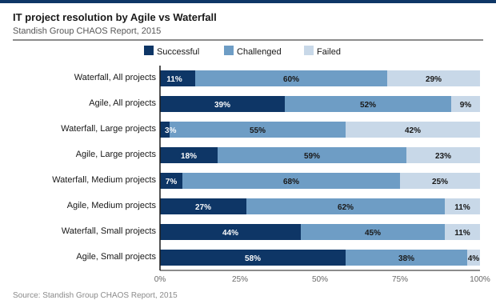
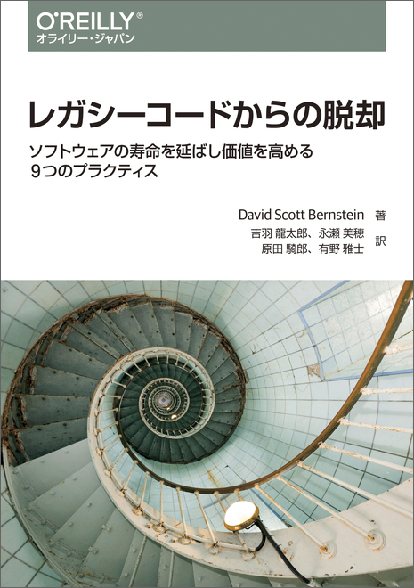

従来のウォーターフォール開発では，何かが動作するためには，全てが動作しなくてはならない
開発スタイル
2026年06月08日
製造業や建設業をベースに1970年にウィンストン・ロイスによって提唱された開発モデル
step-flow__row_height: 4.5em
col_width: [13, 22, 22, 45]
header_font: 1.2em
top-aligned: true
line_height: 1.1
header:
step: ステップ
description: 作業内容
output: アウトプット
risk: リスク
font:
step: 1.5em
description: 1.1em
output: 1.1em
risk: 1.1em
record:
- step: 要求
description:
- 要求文章を作るために，情報を専門家や将来のユーザーから集める
output:
- 現在のリリースで開発予定の機能（ソフトウェアが行うこと）を指示する文章
risk:
- ステークホルダー間の認識齟齬により，要求が不完全・矛盾したまま確定
- step: 設計
description:
- 要求文章をもとに，システム構成・モジュール分割・データフロー・インターフェースを計画する
output:
- ソフトウェアの作り方を説明する図や文章
risk:
- 要求の曖昧な箇所を設計者が独自解釈し，意図と異なる設計が発生
- 非機能要件（性能・スケーラビリティ）の考慮が漏れる
- step: 実装
description:
- 設計資料に記載された要件を満たすようにコーディング
output:
- 各モジュール・コンポーネントのソースコード
risk:
- 設計文章の不備や誤りをそのまま実装し，バグの原因が設計まで遡る
- step: 統合
description:
- チームメンバーそれぞれが書いたコードをまとめる段階
output:
- 全モジュールを結合した統合済みシステム（ビルド成果物）
risk:
- 各モジュールは個別には動作したが，結合時にインターフェース不一致発覚
- step: テスト
description:
- 統合されたソフトウェアが意図した通りに振る舞うか確認
output:
- テスト結果レポート，バグレポート，修正済みコード
risk:
- 要求・設計の上流工程での誤りがここで初めて発覚
- テスト期間の圧縮によりカバレッジが不足し，重大なバグが見逃される
- step: インストール
description:
- ソフトウェアを本番環境に展開し，動作に必要な設定・データ移行を行う
output:
- 本番環境で稼働中のシステム，インストール・設定手順書
risk:
- 開発・テスト環境との差異により本番でのみ障害が発生
- step: 保守
description:
- 問題の修正，新機能の追加，アップデートを実施
output:
- パッチ・修正版リリース，新機能追加版，更新されたドキュメント
risk:
- 設計書・仕様書の更新が追いつかず，ドキュメントとコードの乖離が蓄積
- 開発チームメンバーが会社を去ってしまって，ドキュメント参照だけでは既存の設計が理解できないウィンストン・ロイス本人も，「このやり方は機能しないだろう」と言及していた
従来のウォーターフォール開発では，何かが動作するためには，全てが動作しなくてはならない
ウォーターフォールが機能しない4つの構造的理由
regmonkey_index:
title_fontsize: 1.1em
bullet_fontsize: 0.8em
numbering: true
children:
- title: 動作確認は統合後にしかできない
description:
- 実装中に検証できるのはモジュール単体（ユニットテスト）だけ
- システム全体の整合性は結合フェーズまで確認手段がない
width: [48, 52]
- title: 多くのバグは結合フェーズで一斉に発覚する
description:
- 長期間独立して書いたコードを一度に結合するため齟齬が顕在化
- インターフェース不一致・前提の齟齬・依存関係の誤りが一気に出る
width: [48, 52]
- title: 結合テストFailの原因の切り分けが難しい
description:
- 要求の誤りか・設計の誤解釈か・実装ミスかを判別しづらい
- 設計の論理的誤りなら手戻りは設計フェーズまで遡る
width: [48, 52]
- title: 結合テスト段階でのバグ修正コストが肥大化
description:
- 設計レベルのバグが一斉に顕在化し，修正が新たなバグを生む連鎖
- 締め切り圧力でテスト期間が削られ，技術的負債として残る
width: [48, 52]Standish Group CHAOS Report（2015）：Successful・Challenged・Failed1 の3区分で集計

ウォーターフォールの成功率2
全プロジェクト：成功率 11%（Agile 39%）
大規模プロジェクト：成功率 3% （Agile 18%）
中規模プロジェクト：成功率 7%（Agile 27%）
小規模プロジェクト：成功率 44%（Agile 58%）

| タイトル | レガシーコードからの脱却 |
| 著者 | David Scott Bernstein 著／吉羽 龍太郎・永瀬 美穂・原田 騎郎・有野 雅士 訳 |
| 発売日 | 2019/09/19 |
| ISBN13 | 978-4-87311-886-4 |
| 体裁 | 344ページ |
Regmonkey Presentation. ©Ryo Nakagami. All rights reserved.